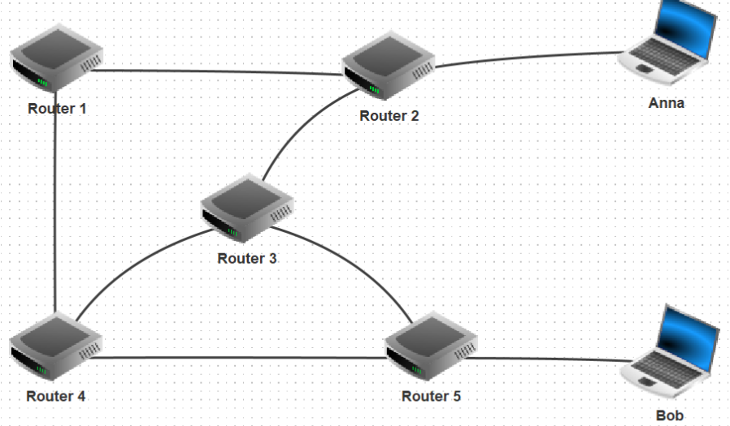

In diesem Lernbereich arbeitest du sowohl theoretisch als auch praktisch mit den Grundlagen von Rechnernetzen. Du erstellst dazu ein eigenes Lerndokument (PDF) und setzt die Inhalte mit der Simulationssoftware „Filius“ um. Zusätzlich planst du im Team ein Netzwerkprojekt. Ziel ist es, ein fundiertes Verständnis für Netzwerktechnologien, Adressierung, Routing, Dienste und Sicherheit zu entwickeln.
Gruppengröße: 1–3 Personen
Hinweis: Wo finde ich was?
A. Schichtenmodell: 7.3 (OSI, TCP/IP, hybrides Modell), Einzelschichten in 7.4, 7.5, 7.9 und 7.10
B. Topologien und Übertragungsmedien: 7.1; Dienste und Vermittlungsverfahren: 7.2; Protokolle HTTP/HTTPS, SMTP/POP3/IMAP, FTP: 7.10
C. IP-Adressen (IPv4, IPv6), Routingtabellen: 7.5; DHCP: 7.7
D. CIDR, Subnetting, VLSM: 7.6; DNS: 7.8
E. Authentifizierung: 7.12; Transportverschlüsselung (TLS, VPN): 7.11 (siehe Kurs „Informationssicherheit“, Seite 7.11 bzw. 7.12)
Filius: 7.13 (P1, Gateway), 7.14 (P6, Routingtabellen), 7.15 (P2, DHCP), 7.16 (P3/P4, DNS und Webserver); Fehlersuche: Aufgabe 7.5.3
Theorie – Dein Lerndokument
Erstelle ein fortlaufendes Lerndokument mit eigenen Erklärungen, Skizzen, Zusammenfassungen und Beispielen. Dieses gibst du am Ende als PDF ab. Behandle dabei die folgenden Themen:
A. Schichtenmodell (OSI und TCP/IP)
Erkläre den Aufbau des OSI-Modells mit 7 Schichten.
Vergleiche es mit dem TCP/IP-Modell.
Wofür sind diese Schichtenmodelle gut?
B. Aufbau von Rechnernetzen
Netztopologien: Baum, Stern, Ring, Bus, vermaschte Topologie – jeweils physisch und logisch, mit Vor- und Nachteilen
IP-Adressen: IPv4 und IPv6 (Schwerpunkt IPv4), Netzanteil und Hostanteil
Routingtabellen: Aufbau, Funktionsweise
Adressvergabe: manuell vs. dynamisch per DHCP
D. Netzwerksegmentierung & Namen
CIDR, Subnetting, VLSM – Grundlagen und Anwendung
VLANs – Trennung von Netzbereichen
DNS – Aufbau, Namensauflösung
E. Sicherheit in Rechnernetzen
Identifikation und Authentifizierung: RADIUS, Zwei-Faktor-Verfahren, biometrische Verfahren
Sicherheitsrisiken in Netzwerken und Schutzmaßnahmen
Praxis – Übungen mit Filius
Die folgenden Aufgaben bearbeitest du mit der Software „Filius“. Jede Übung besteht aus:
Aufbau des Netzwerks
Konfiguration der Geräte und Dienste
Test und Analyse (z. B. mit Ping oder Browser)
Dokumentation mit Screenshots und kurzen Erklärungen
P1 – Erste Schritte: Ping & einfache Adressierung
Verbinde zwei Clients direkt über ein Netzwerkkabel.
Vergib IP-Adressen manuell.
Teste die Verbindung mit dem Ping-Befehl.
P2 – DHCP
Verbinde vier Clients mit einem DHCP-Server.
Richte den DHCP-Server ein.
Teste die automatische Adressvergabe.
Stelle den Ablauf DISCOVER → OFFER → REQUEST → ACK dar.
Zeige die SAT (Source Address Table) des Switches und erkläre ARP.
P3 – DNS
Richte einen DNS-Server ein.
Lege einen A-Record für schule.local an.
Teste die Namensauflösung mit Ping oder im Browser.
P4 – Webserver
Richte einen Webserver mit einer einfachen HTML-Seite ein.
Ändere das Design leicht (z. B. Hintergrundfarbe).
Greife per IP-Adresse und per Domain auf den Server zu.
Belege, dass die Webseite unverschlüsselt übertragen wird.
P5 – Mailserver
Richte einen Mailserver ein.
Erstelle Konten, versende und empfange Nachrichten.
Erkläre die Unterschiede zwischen SMTP, POP3 und IMAP.
P6 – Routing mit mehreren Subnetzen
Baue ein Netz mit zwei Routern und zwei Subnetzen auf.
Deaktiviere automatisches Routing und konfiguriere Routingtabellen manuell.
Erkläre die Einträge der Weiterleitungstabellen.
P7 – Komplexes Netz
Plane ein Netz mit drei Subnetzen (z. B. Verwaltung, Schüler, Internet).
Trenne Schüler- und Verwaltungsnetz per VLAN oder Routing.
Stelle sicher, dass beide ins Internet gelangen, aber sich nicht gegenseitig erreichen.
P8 – Topologie und Routerausfall
Baue ein Netz, bei dem Daten zwischen Anna und Bob den kürzesten Weg nehmen.
Simuliere den Ausfall von Router 3.
Stelle die Funktion durch geänderte Routingtabellen wieder her.

Rechnernetz zu P8
P9 – IP-Adressen und Netzmasken
Baue ein Netz mit Netzmaske 255.255.224.0 auf.
Untersuche, welche Geräte miteinander kommunizieren können.
Erweitere das Netz um zwei Vermittlungsrechner und einen Webserver im Subnetz 255.255.255.252.
Stelle durch Routing sicher, dass alle Geräte kommunizieren können.
Hier stand eine Abbildung, deren Nutzungsrechte für die Webseite nicht geklärt sind.
Ein bis drei der praktischen Aufgaben (P1–P9) werden dir bzw. deinem Team zugewiesen. Zu diesen erstellt ihr vertiefende Erklärvideos – mit oder ohne Ton. Alternativ könnt ihr eure Schritte auch als Text oder Präsentation dokumentieren.
Miniprojekt – Netzplanung für Schule oder Start-up
Entwickle eine vollständige Netzstruktur für zwei bis drei Abteilungen. Dokumentiere folgende Aspekte:
Topologie-Skizze, Wahl der Übertragungsmedien
Logische Segmentierung mit VLSM und VLANs
Einrichtung von DNS, Mailserver, Webserver, Proxy/Firewall
Sicherheitskonzept (z. B. Zugriffsbeschränkungen, Authentifizierung)
Stelle dein Ergebnis als grafische Übersicht (also eine Art „Poster“ oder Infografik) dar.
Hinweise zur Arbeit
In der Theorie: Fachbegriffe korrekt definieren, mit eigenen Worten erklären und mit Beispielen belegen.
In der Praxis: Beginne mit einfachen Szenarien (z. B. Ping) und steigere die Komplexität Schritt für Schritt.
Dokumentiere auch Fehler und deren Lösungen – das hilft beim Verständnis.
Arbeitet im Team: Eine Person baut auf, eine testet, eine dokumentiert. Kontrolliert euch gegenseitig.
Bewertungsmatrix
Teilbereich
Kriterium
Punkte
Beschreibung
A-Teil
A-Teil
Vollständigkeit & fachliche Korrektheit
8
Alle geforderten Inhalte sind vorhanden. Kleinere Lücken führen zu Abzügen.
Durchgehend fachlich korrekt. Kleinere Fehler führen zu Abzügen.
A-Teil
Übersichtlichkeit / Merke + Beispiele
4
Übersichtlich, klare Zusammenfassung und passende Beispiele.
B-Teil – Dokumentation
B-Teil Dokumentation
Vollständigkeit und fachliche Korrektheit
10
Alle Arbeitsschritte dokumentiert. Kleinere Lücken führen zu Abzügen.
Durchgehend fachlich korrekt. Fehler führen zu Abzügen.
B-Teil Dokumentation
Nachvollziehbarkeit & Test der Funktionsfähigkeit
10
Arbeitsschritte logisch und verständlich dargestellt.
Alle Netze getestet und Ergebnisse dokumentiert.
B-Teil – Videos
B-Teil Videos
Nachvollziehbarkeit / Erklärung & Test der Funktionsfähigkeit
6
Aufbau wird klar erklärt, Struktur nachvollziehbar.
Funktionsfähigkeit wird klar gezeigt.
B-Teil Videos
Fachliche Korrektheit
3
Fachlich korrekt dargestellt. Fehler führen zu Abzügen.
B-Teil Videos
Qualität der Aufnahme
3
Ton und Bild klar verständlich.
C-Teil (hilfsmittelfreier Teil)
C-Teil
Beschreibung des Aufbaus
3
Detaillierte, klare Beschreibung.
C-Teil
Kennzeichnung der logischen Segmentierung
5
Segmentierung korrekt und klar gekennzeichnet.
C-Teil
Schrittfolge für Einrichtung / Ablauf der Dienste
5
Vollständig und in logischer Reihenfolge dargestellt.